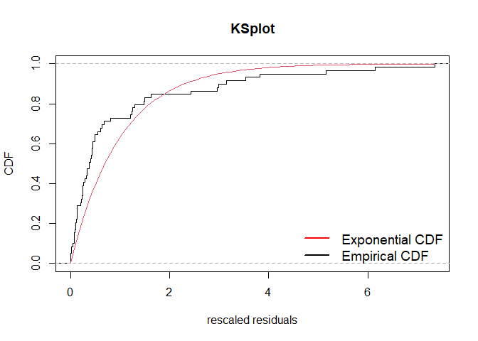
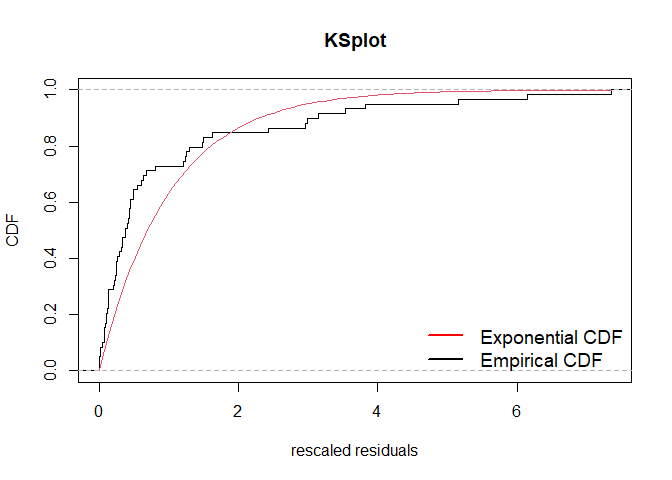
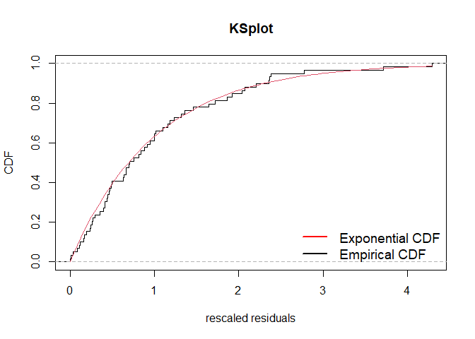
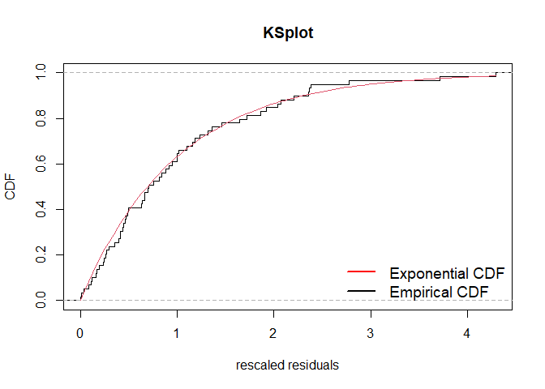
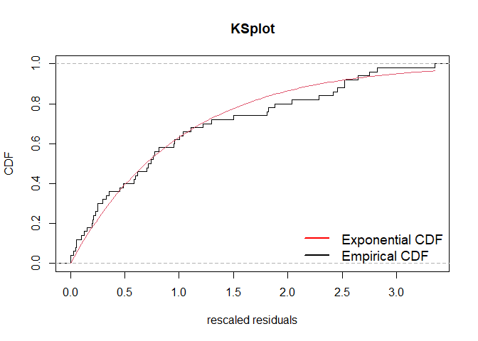
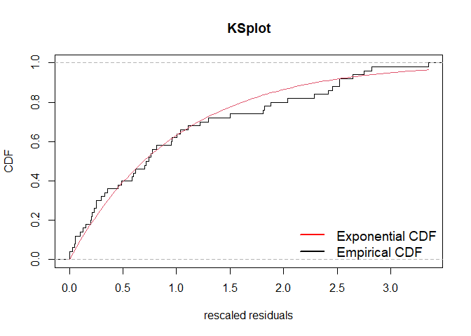
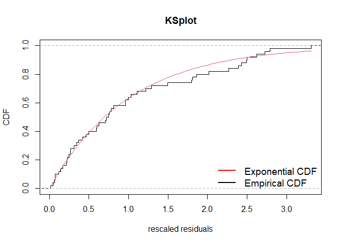
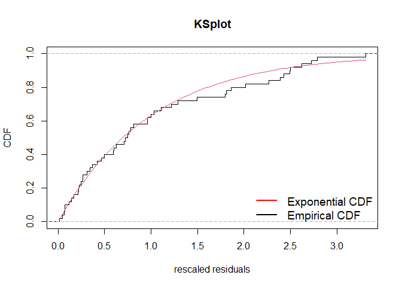
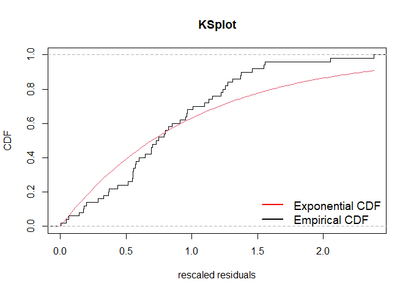
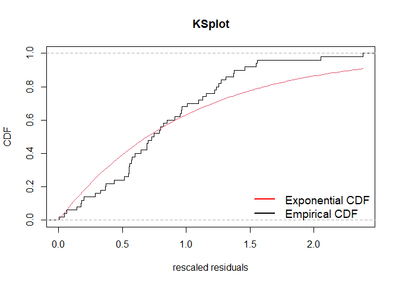

ppdiag is an R package which provides a collection of tools which can be used to assess the fit of temporal point processes to data.
These currently include:
- Simulating data from a specified point process
- Fitting a specified point process model to data
- Evaluating the fit of a point process model to data using several diagnostic tools
Installation
The in development version of this package is available from GitHub with:
# install.packages("devtools") devtools::install_github("OwenWard/ppdiag")
Example
To illustrate some of the basic functionality of this package, we can simulate data from a specified Hawkes process and examine our diagnostic results when we fit a homogeneous Poisson process to this data.
library(ppdiag) hp_obj <- hp(lambda0 = 0.2, alpha = 0.35, beta = 0.8) sim_hp <- simulatehp(hp_obj, end = 200) #> Simulating up to endtime. To simulate n events specify n. sim_hp #> $events #> [1] 8.761899 21.036980 21.991337 23.391633 24.177857 24.511210 #> [7] 25.702796 25.937654 27.373773 31.520000 31.877112 34.467070 #> [13] 38.461086 39.522600 39.964184 47.776783 49.943636 59.448151 #> [19] 83.012201 99.536252 100.307178 100.372424 100.652395 101.729779 #> [25] 121.426380 123.377771 128.142991 137.725687 138.118089 138.932666 #> [31] 140.695602 145.911693 145.942575 147.400560 148.619123 150.197754 #> [37] 152.238040 153.583899 157.581572 157.814416 157.815367 158.223065 #> [43] 158.466506 159.474204 159.917234 160.623121 160.698534 162.257757 #> [49] 162.703395 163.348421 164.191265 168.991314 179.069977 180.477806 #> [55] 191.810877 195.686487 196.995866 197.788781 197.951924 #> #> $lambda.max #> [1] 1.086243
We can readily evaluate the fit of a homogeneous Poisson process to this data.
est_hpp <- fithpp(sim_hp$events) est_hpp #> $lambda #> [1] 0.3118558 #> #> $events #> [1] 8.761899 21.036980 21.991337 23.391633 24.177857 24.511210 #> [7] 25.702796 25.937654 27.373773 31.520000 31.877112 34.467070 #> [13] 38.461086 39.522600 39.964184 47.776783 49.943636 59.448151 #> [19] 83.012201 99.536252 100.307178 100.372424 100.652395 101.729779 #> [25] 121.426380 123.377771 128.142991 137.725687 138.118089 138.932666 #> [31] 140.695602 145.911693 145.942575 147.400560 148.619123 150.197754 #> [37] 152.238040 153.583899 157.581572 157.814416 157.815367 158.223065 #> [43] 158.466506 159.474204 159.917234 160.623121 160.698534 162.257757 #> [49] 162.703395 163.348421 164.191265 168.991314 179.069977 180.477806 #> [55] 191.810877 195.686487 196.995866 197.788781 197.951924 #> #> attr(,"class") #> [1] "hpp" diagpp(est_hpp, events = sim_hp$events)
 

#>
#> Raw residual: 59
#> Pearson residual: -4.892999
#>
#> One-sample Kolmogorov-Smirnov test
#>
#> data: r
#> D = 0.25528, p-value = 0.0007062
#> alternative hypothesis: two-sided 

MMHP Example
This is particularly useful for more complex point processes, such as the Markov Modulated Hawkes Process. We can simulate events from this model and examine the fit of simpler point processes to this data.
Q <- matrix(c(-0.2, 0.2, 0.1, -0.1), ncol = 2, byrow = TRUE) mmhp_obj <- mmhp(Q, delta = c(1 / 3, 2 / 3), lambda0 = 0.2, lambda1 = .75, alpha = 0.4, beta = 0.8) mmhp_obj #> $Q #> [,1] [,2] #> [1,] -0.2 0.2 #> [2,] 0.1 -0.1 #> #> $delta #> [1] 0.3333333 0.6666667 #> #> $events #> NULL #> #> $lambda0 #> [1] 0.2 #> #> $lambda1 #> [1] 0.75 #> #> $alpha #> [1] 0.4 #> #> $beta #> [1] 0.8 #> #> attr(,"class") #> [1] "mmhp" mmhp_events <- simulatemmhp(mmhp_obj, n = 50) #> 50 events simulated. To simulate up to endtime set given_states=TRUE and provide states.
We can easily fit a homogeneous Poisson process and visualise the goodness of fit.
 

#>
#> Raw residual: 51
#> Pearson residual: 0
#>
#> One-sample Kolmogorov-Smirnov test
#>
#> data: r
#> D = 0.096536, p-value = 0.7036
#> alternative hypothesis: two-sidedSimilarly for a Hawkes process.
 

#> Raw residual: -8.216385e-05
#> Pearson residual: 0.01676284
#>
#> One-sample Kolmogorov-Smirnov test
#>
#> data: r
#> D = 0.094115, p-value = 0.7321
#> alternative hypothesis: two-sidedWe can then compare to the true point process model.
diagpp(mmhp_obj,mmhp_events$events)
 
